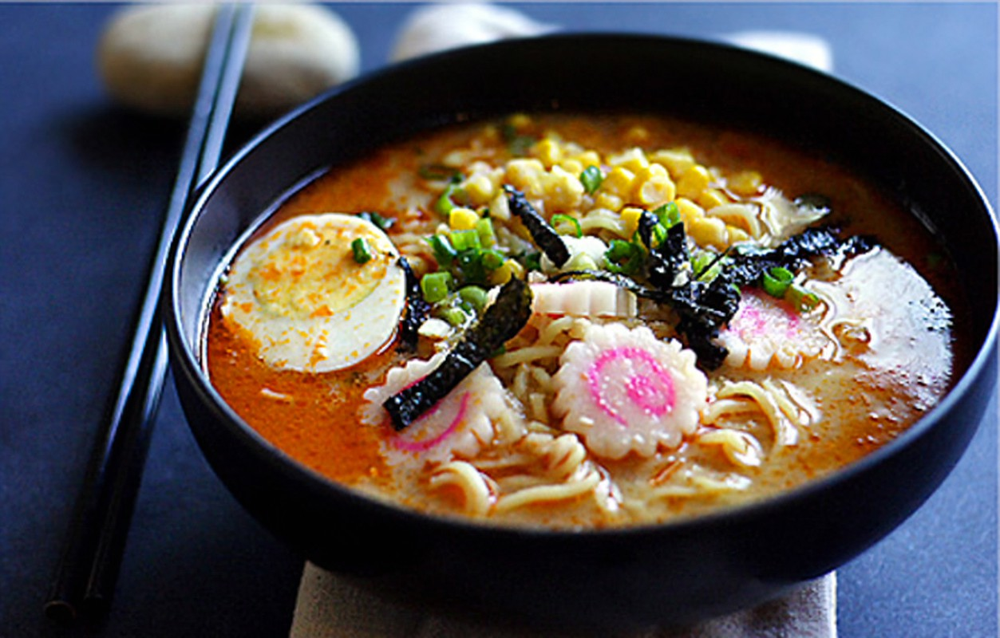

Рамен
Страва японської кухні з пшеничною локшиною. Дуже популярна в Кореї та Японії, особливо серед молоді, бо недорога, смачна та поживна.
350 ГРН
Страва японської кухні з пшеничною локшиною. Дуже популярна в Кореї та Японії, особливо серед молоді, бо недорога, смачна та поживна.
350 ГРН

Японську кухню неможливо уявити без локшини, як українську без борщу. Попри те, що удон вважають фастфудом, він не нічим не поступається вишуканим ресторанним делікатесам.
400 ГРН

Любиш пиріжки із начинкою? Хрустка скоринка й вишуканий смак морепродуктів нікого не залишать байдужими!
450 ГРН
Хто сказав, що в Японії подають виключно рибні страви? Якіторі — це шашлик з курятини та інших видів м’яса в кисло-солодкому соусі.
380 ГРН

Милі трикутнички з рису та водоростей сподобаються і діткам, і дорослим. У класичні онігірі кладуть начинку з тунця або іншої риби. Їсти їх заведено із соєвим соусом.
500 ГРН

Повернімося до локшини. Японці не втомлюються придумувати різні варіації цієї страви. Соба — локшина з гречаного борошна, що подається із бульйоном або як окремий делікатес.
300 ГРН